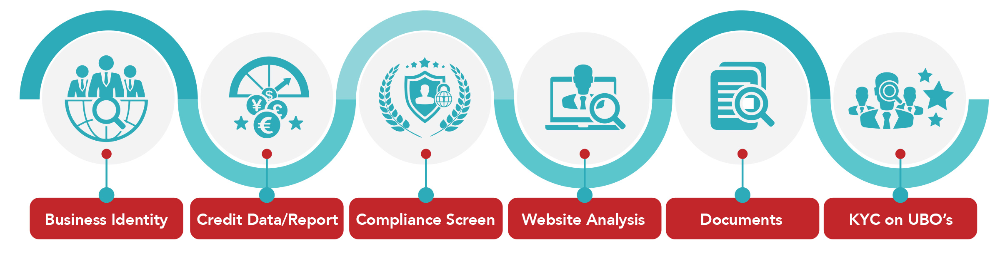

The Power of Data Automation to Underwrite Merchants.
Article Published on November 25th, 2019. View Article on The Paypers.
Businesses that emerge and engage in our ever-changing, fast-paced global online ecosystem require significant virtues composed of steadiness, stability and adaptability. Companies are continually managing outside forces from savvy competitors, technology demands, customer engagement preferences, regulatory evolutions and economic changes. It is essential for businesses globally to rethink strategy, sync with leading technology developments and adapt their business mantras with dynamic decision-making intelligence to maximise their business performance potential and have empowerment for continued innovation.
Underwriting merchants is a vital part of businesses sustainability. It’s the first level of defence against fraud and illicit activity towards an entity. However, for many businesses worldwide obtaining a harmonised view of the risk associated with onboarding comes with an array of cumbersome processes and manual due-diligence. Manual processes that bring an abundance of cost and resource demand to an entity along with long-delayed onboarding times. Which, in turn, affects the viability of business revenue.
So how as an industry do we improve our first level of defence? How quickly can we have quality merchants in the pipeline? How fast can we verify businesses and directors and dramatically improve the time it takes to onboard our merchants?
Leveraging modern technologies such as data automation paired with real-time analytics, dynamic decision-making frameworks and artificial intelligence solves the cumbersome annoyances of the manual due-diligence process. Ultimately the only way to onboard merchants, directors and customers with confidence risk is managed and then verify every transaction afterwards is by having access to world-class data.
The payment industry is driven to protect and secure the ecosystem from bots, sophisticated fraudsters and large-scale data breaches. In the last year alone, we have seen an abundant increase in cyber-attacks where security breaches increased 11% this year from 2018, and within the first half-year of 2019, 4.1 billion records were breached. No industry segment is as committed to the fight against fraud than Fintechs. They’ll invest more in advanced fraud detection and prevention technologies in the coming years than any other industry, and globally Gartner has stated that it will reach $133.7 billion on cybersecurity by 2022.
If businesses have access to the same dynamic fraud detection and prevention technologies that are so well established for the B2C customer journey and implement these technology services towards their B2B relationships, it will eliminate the manual process burden. From obtaining all KYB verifications required such as credit reports, corporate structures, entity documentation, UBO’s/directors verified against KYC checks through to clearly defined risk indicators all in an instant. They are obtaining a fully dynamic and seamless underwriting process regardless of which jurisdiction globally all with a centralised view of checks and risk for every custom compliance workflow and on-going checks. There would be a new level of confidence obtained through trusted information and dynamic intelligence. Businesses would maximise fraud prevention from the first level of defence, accelerate their performance and ensure that every entity they onboard are the right fit for their portfolio and maintains a strong brand reputation continuously.

However, obtaining this data and automation can be an obstacle in itself for many businesses. With most of their fraud prevention focus put forth once a merchant is active with live volumes. Integrating a single API to access data points for just one aspect of their underwriting process can take some businesses up to 6 months to implement. Establishing data access and automation for all segments of their underwriting can appear too much of an arduous task, leaving them forced to maintain their manual due-diligence despite the costs, resource demands and time associated.
As an industry, we need to continue our support for businesses that provide access to world-class data with data automation and dynamic intelligence. Partnerships have become increasingly prevalent where S&P Global 2018 Fintech Market Report states that Software-as-a-Service business model is being embraced more and more by Financial Institutions (FI’s) globally as a part of their overall business strategy. Fintech segments are finding it more beneficial to license their innovative technology where, in turn, digital lenders see the actual benefits and ease in implementing technology services rather than building internally. We are evolving into a genuine network of harnessed intelligence and technology to serve online engagement best. Access to all data required from one or even two API’s through Fintech partnerships would impact our growing ecosystem substantially.
Data aggregation with automation is where the marketplace is going, and providers such as 4Stop know and understand the real value and impact enriched data experiences can provide a business’ bottom line. Allowing companies to refocus their energy and resources to doing what matters the most; growing their business, continuing their innovation and driving change for our online ecosystem.
ABOUT JUMIO
When identity matters, trust Jumio. Jumio’s mission is to make the internet a safer place by protecting the ecosystems of businesses through cutting-edge online identity verification and authentication services that quickly and accurately connect a person’s online and real-world identities. Jumio’s end-to-end identity verification solutions fight fraud, maintain compliance and onboard good customers faster.
Leveraging advanced technology including augmented intelligence, AI, biometrics, machine learning, certified 3D liveness detection and human review, Jumio helps organizations meet regulatory compliance including KYC, AML and GDPR and definitively establish the digital identity of their customers. Jumio has verified more than 200 million identities issued by over 200 countries and territories from real-time web and mobile transactions. Jumio’s solutions are used by leading companies in the financial services, sharing economy, digital currency, retail, travel and online gaming sectors. Based in Palo Alto, Jumio operates globally with offices in North America, Latin America, Europe and Asia Pacific and has been the recipient of numerous awards for innovation. For more information, please visit www.jumio.com.

 Follow us
Follow us